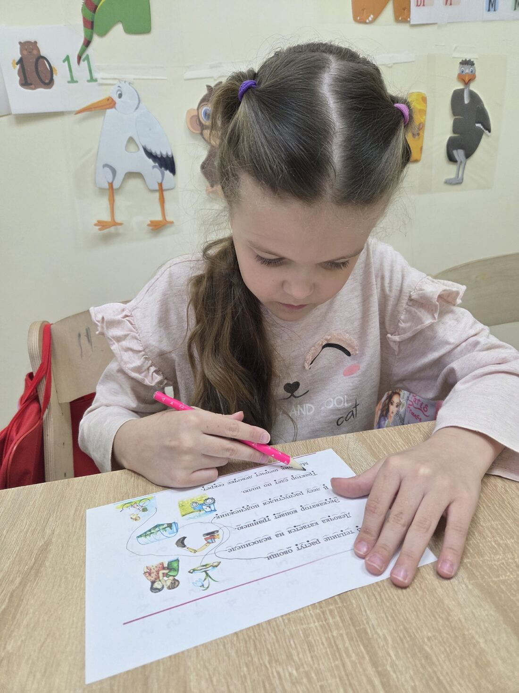
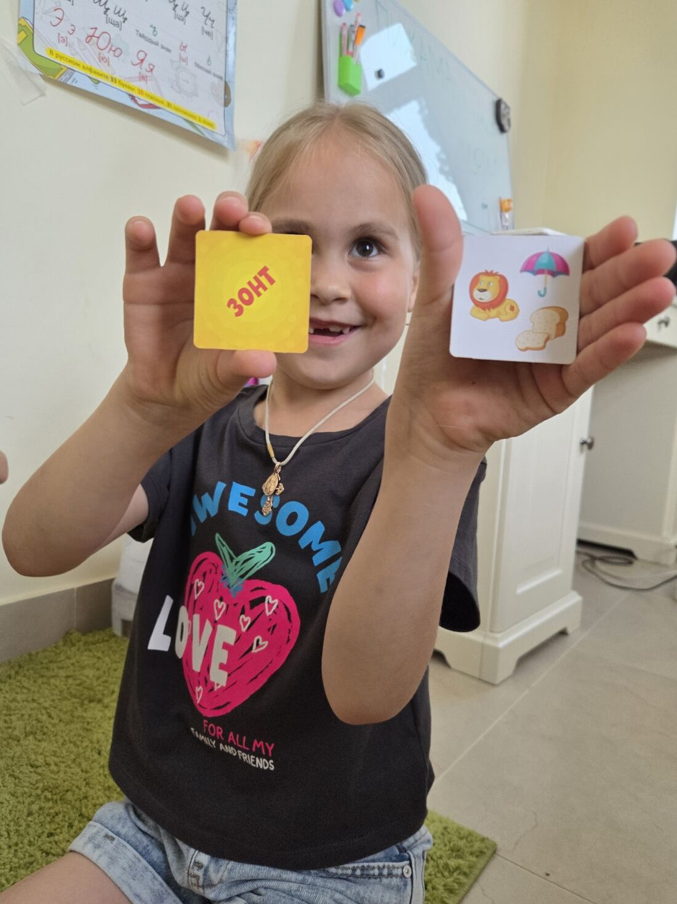
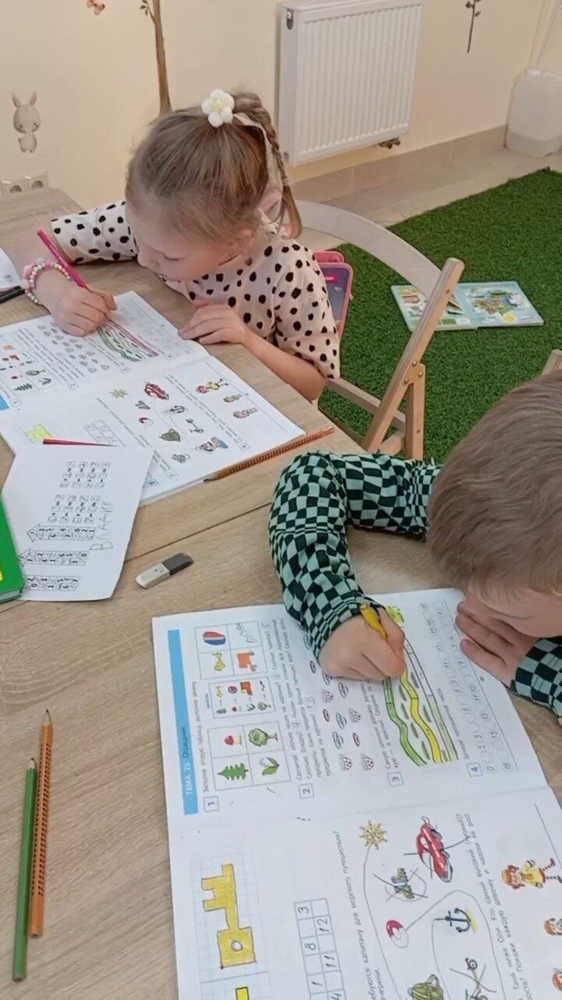
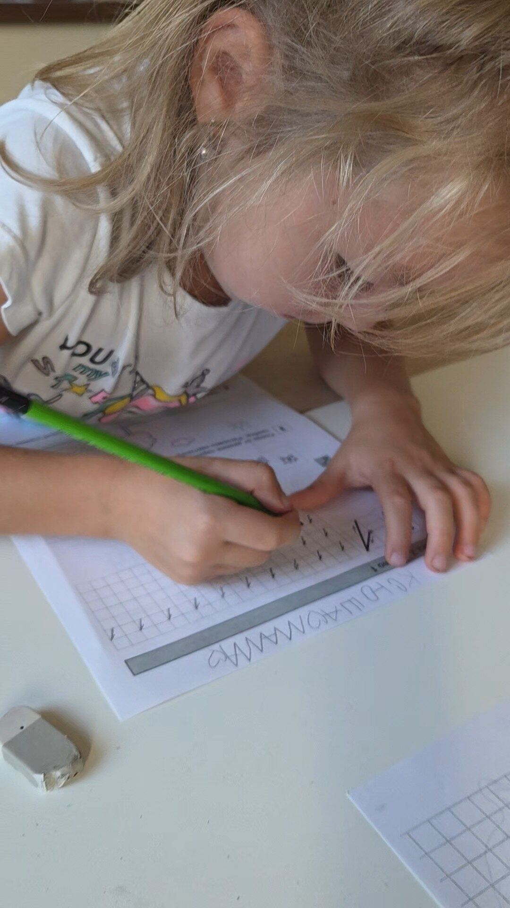
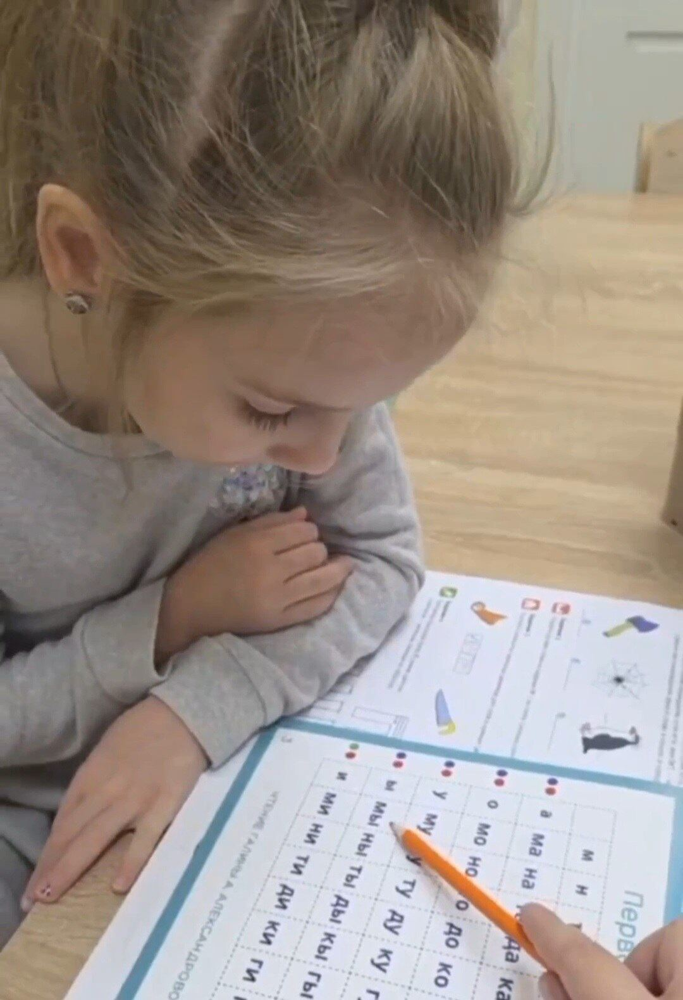
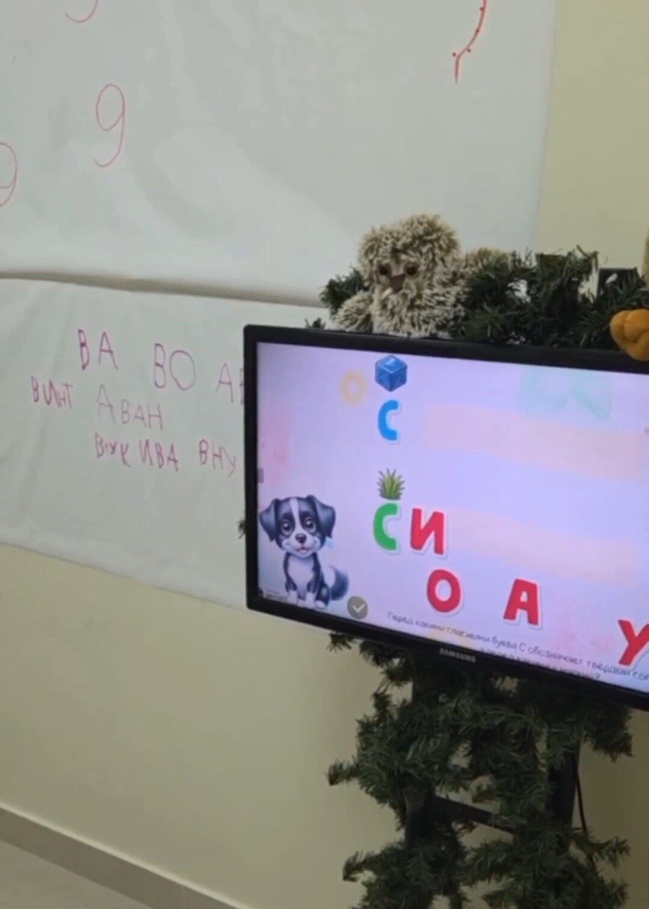

5-7 лет
Подготовка к школе, 5-7 лет
Комплексная программа для будущих первоклассников: учим читать, писать и считать, а главное — развиваем самостоятельность и интерес к учёбе, чтобы 1 сентября не стало стрессом.
Комплексная программа для будущих первоклассников: учим читать, писать и считать, а главное — развиваем самостоятельность и интерес к учёбе, чтобы 1 сентября не стало стрессом.
Готовность к школе — это не только умение читать и писать. Это ещё и умение слушать инструкцию, доводить задание до конца, работать в группе сверстников. Именно поэтому наша программа сочетает академические навыки с развитием произвольного внимания и самостоятельности.
Мы работаем в мини-группах до 6 человек, чтобы педагог успевал заметить, если ребёнку что-то даётся сложнее, и мягко скорректировать темп именно под него, не подгоняя под общую программу.
Студия «Совёнок» находится в Краснодаре, в посёлке Водники — удобно добираться родителям из соседних районов, не тратя время на дорогу через весь город.






Подготовка к школе, 5-7 лет
за 8 занятий
Идёт набор на новый учебный год — при записи и оплате до 1 сентября действует старая цена, 2800 ₽
Записаться по старой ценеОптимально начинать за год-полтора до школы — это даёт время сформировать навыки без спешки. Но если до 1 сентября осталось меньше времени, мы адаптируем темп программы под ваш срок.
Мы не даём гарантий, одинаковых для всех детей — темп у каждого свой. Но при регулярном посещении подавляющее большинство детей уверенно читают и считают к началу учебного года.
Домашние задания минимальны и по желанию. Мы считаем, что дошкольник в первую очередь должен сохранять интерес к обучению, а не перегружаться.
Группы небольшие — до 6 человек, что позволяет педагогу уделить внимание уровню подготовки каждого ребёнка.